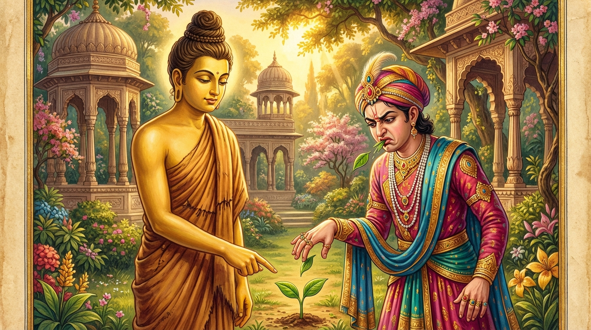

9. ඒකපණ්ණ ජාතකය (149)
“එකපණ්ණො අයං රුක්ඛො” (එක පත්රයක් ඇති මේ රුක) යන මේ ජාතක කතාව බුදුරජාණන් වහන්සේ විශාලා මහනුවර නිසා මහා වනයේ කූටාගාර ශාලාවේ වැඩවසන සේක්, විශාලා මහනුවර වාසී දුෂ්ට ලිච්ඡවී කුමාරයෙකු අරභයා වදාළ සේක. එකල විශාලා මහනුවර ගව්වෙන් ගව්වට තැනූ ප්රාකාර තුනකින් පරික්ෂිප්ත විය. තැන් තුනක දොරටු සහ අට්ටාලවලින් යුක්ත විය. පරම සෞභාග්යයට පත් නගරයක් විය. එහි නිත්ය වශයෙන් රාජ්යය කරමින් වසන රජවරු හත්දහස් සත්සිය හත්දෙනෙක් වූහ. යුවරජවරු ද එපමණම වූහ. සේනාපතිවරු ද එපමණම වූහ. භාණ්ඩාගාරිකවරු ද එපමණම වූහ. ඒ රාජකුමාරවරුන් අතර ‘දුෂ්ට ලිච්ඡවී කුමාර’ නම් එක් කුමාරයෙක් විය. හෙතෙම ක්රෝධ බහුල ය, රෞද්ර ය, පරුෂ ය, සාහසික ය, දණ්ඩෙන් පහර ලත් විෂඝෝර සර්පයෙකු මෙන් නිතරම ක්රෝධයෙන් ඇවිළෙමින් සිටියේ ය. ඔහු ඉදිරියේ වචන දෙක තුනක් කතා කිරීමට සමත් කිසිවෙක් නොවී ය. මවුපියෝ ද, ඥාතීහු ද, මිත්ර හිතෛෂීහු ද ඔහු හික්මවීමට අසමත් වූහ. ඉක්බිති ඔහුගේ මවුපියන්ට මෙසේ සිතුණි: “මේ කුමාරයා අතිශයින් පරුෂ ය, සාහසික ය. සම්මා සම්බුදුරජාණන් වහන්සේ හැර මොහු හික්මවීමට සමත් අන් කිසිවෙක් නැත. මොහු බුදුරජාණන් වහන්සේ විසින්ම දමනය කළ යුත්තෙක් විය යුතු ය” යි සිතූහ. ඔවුහු ඔහු කැඳවාගෙන ශාස්තෘන් වහන්සේ වෙත ගොස් වැඳ, “ස්වාමීනි, මේ කුමාරයා රෞද්ර ය, පරුෂ ය, ක්රෝධයෙන් දැවෙන්නේ ය. මොහුට අවවාද දෙනු මැනවැ”යි ඉල්ලා සිටියහ.
ශාස්තෘන් වහන්සේ ඒ කුමාරයාට මෙසේ අවවාද කළ සේක: “කුමාරය, සත්ත්වයන් කෙරෙහි රෞද්ර වූ, පරුෂ වූ, සාහසික වූ, හිංසා කරන ස්වභාව ඇති අයෙක් නොවිය යුතු ය. පරුෂ වචන ඇත්තා තමා වැදූ මවට ද, පියාට ද, අඹුදරුවන්ට ද, සහෝදර සහෝදරියන්ට ද, දැසිදස්සන්ට ද, මිත්රසන්ථවයන්ට ද අප්රිය වේ, අමනාප වේ. ඩැශීමට එන සර්පයෙකු මෙන් ද, කැලයෙන් මතු වූ සොලෙක් මෙන් ද, කෑමට එන යක්ෂයෙකු මෙන් ද බියජනක වී, දෙවන සිතින් නිරයාදියේ උපදියි. දිට්ඨධම්මයේදී (මෙලොවදී) ද කෝප කරන පුද්ගලයා කෙතරම් සරසා අලංකාර කළ ද අවලස්සන වේ. පුන්සඳ මෙන් ශ්රියාවත් වූ ඔහුගේ මුහුණ ගින්නෙන් දැවී ගිය නෙළුම් මලක් මෙන් ද, මලකඩ කෑ රන් කැඩපතක් මෙන් ද විරූපී වේ, දැකීමට අමිහිරි වේ. ක්රෝධය නිසා සත්ත්වයෝ:
- ආයුධ ගෙන තමන් විසින්ම තමන්ට පහර ගනිති.
- වස විෂ කති.
- රැහැනින් ගෙල වැලලා ගනිති.
- පර්වත ප්රපාතවලින් පනිති.
මෙසේ ක්රෝධය නිසා කාලක්රියා කොට නිරයාදියේ උපදිති. හිංසා කරන ස්වභාව ඇත්තෝ මෙලොවදීම ගැරහීමට ලක්ව කාබුන් මරණින් මතු නිරයාදියේ උපදිති. නැවත මිනිසත් බව ලැබුවහොත් උපන් දා පටන් රෝග බහුල අය වෙති. ඇස් රෝග, කන් රෝග ආදී රෝග සමූහ වශයෙන් පැමිණ එක්වෙති (වැළඳෙති). රෝගවලින් නොමිදුණාහුම වී නිතර දුකට පත්වූවෝ වෙති. එබැවින් සියලු සත්ත්වයන් කෙරෙහි මෛත්රී සිතින් ද, හිතෛෂී සිතින් ද, මෘදු සිතින් ද යුක්ත විය යුතු ය. මෙබඳු ගුණ නැති පුද්ගලයා නිරයාදී භයවලින් නොමිදෙන්නේ ය.” ඒ කුමාරයා ශාස්තෘන් වහන්සේගේ අවවාදය අසා එක් අවවාදයෙන්ම නිහතමානී වූයේ ය; දැමුණේ ය; විෂ නැත්තෙක් වූයේ ය; මෛත්රී සිත් ඇත්තෙක් හා මෘදු සිත් ඇත්තෙක් වූයේ ය. අනුන් ආක්රෝෂ කළ ද, පහර දුන් ද නැවතී බැලීමක් හෝ නොකළේ ය. දළ ගැලවූ සර්පයෙකු මෙන් ද, අඬු සිඳුණු කකුළුවෙකු මෙන් ද, අං සිඳුණු ගවයෙකු මෙන් ද (ශාන්ත) වූයේ ය.
ඔහුගේ ඒ ප්රවෘත්තිය දැන භික්ෂූන් වහන්සේලා දම් සභාවෙහි කතාවක් ඉපැද්දවූහ: “ඇවැත්නි, දුෂ්ට ලිච්ඡවී කුමාරයාට කොතෙක් අවවාද කළත් මවුපියන්ටවත් ඥාති මිත්රාදීන්ටවත් ඔහු දමනය කිරීමට නොහැකි විය. නමුත් සම්මා සම්බුදුරජාණන් වහන්සේ ඔහු එකම අවවාදයෙන් දමනය කොට, විෂ නැත්තෙකු බවට පත් කර, මද කිපුණු හස්තිරාජයෙකු මෙන් නිසල බවට පත් කළ සේක. මේ කාරණය ගැන මෙය ඉතාම සුභාෂිතයකි: ‘මහණෙනි, ඇතුන් දමනය කරන ඇත් ගොව්වා විසින් හික්මවන ලද ඇතා දුවන්නේ පෙරදිගට හෝ පැළදිගට හෝ උතුරට හෝ දකුණට හෝ යන එක් දිශාවකට පමණි... අශ්වයන් දමනය කරන්නා... ගවයන් දමනය කරන්නා... (එසේමය). නමුත් මහණෙනි, අරහත් වූ සම්මා සම්බුදුරජාණන් වහන්සේ විසින් පුරුෂ දම්යයා (හික්මවිය යුතු පුරුෂයා) මෙහෙයවනු ලැබූ විට අට දිශාවටම දුවන්නේ ය; රූපී ව රූපයන් දකියි... මෙය එක් දිශාවකි... (යනාදී වශයෙන්). ඔහු ‘යෝගාවචරයන්ට අනුත්තර වූ පුරිසදම්මසාරථී’ යයි කියනු ලැබේ.’ (ම.නි. 3.312). ඇවැත්නි, සම්මා සම්බුදුරජාණන් වහන්සේ හා සමාන පුරිසදම්මසාරථී කෙනෙක් (පුරුෂයන් දමනය කරන්නෙක්) නම් නැත්තේ ය.” ශාස්තෘන් වහන්සේ වැඩම කර, “මහණෙනි, කවර නම් කතාවකින් දැන් රැස්ව සිටියහු ද?” යි විචාරා, “මෙන්න මේ කතාවෙනි” යි කියූ කල්හි, “මහණෙනි, මොහු මා විසින් එක් අවවාදයෙන්ම දමනය කරන ලද්දේ දැන් පමණක් නොවේ, පෙරත් මම මොහු එකම අවවාදයෙන් දමනය කළෙමි” යි වදාරා අතීත කතාව ගෙනහැර දැක්වූ සේක.
අතීතයේ බරණැස් නුවර බ්රහ්මදත්ත රජු රාජ්යය කරන සමයේ, බෝධිසත්ත්වයෝ උසස් බ්රාහ්මණ කුලයක ඉපිද, වැඩිවියට පත් ව තක්සලාවෙන් වේදත්රය සහ සියලු ශිල්ප ඉගෙන, ටික කලක් ගිහිගෙයි වස, මවුපියන්ගේ අභාවයෙන් පසු ඍෂි ප්රවෘජ්ජාවෙන් පැවිදි ව, අභිඥා සහ සමාපත්ති උපදවා හිමාලයේ වාසය කළහ. එහි බොහෝ කලක් වැස, ලුණු ඇඹුල් සෙවනය පිණිස ජනපද චාරිකාවේ ගොස් බරණැස් නුවරට පැමිණ රාජකීය උද්යානයේ ලැගුම් ගෙන, පසු දින මනාව හැඳ පොරවා තාපස කල්පයෙන් (සංවරයෙන්) යුක්ත ව පිඬු සිඟා නගරයට පිවිස රජමැදුරේ මිදුලට පැමිණියහ. රජතුමා සීහපඤ්ජරයෙන් (කවුළුවෙන්) බලා සිටින විට තාපසයන් දැක, ඉරියව් පැවැත්ම ගැන පැහැදී, “මේ තාපසයා ශාන්ත ඉන්ද්රිය ඇත්තේ ය, ශාන්ත මනස ඇත්තේ ය, විය දණ්ඩක් පමණ දුර බලන්නේ ය. තබන තබන පියවරක් පාසා දහසක් වටිනා පියල්ලක් තබන්නාක් මෙන් සිංහ විලාසයෙන් පැමිණෙයි. යම් හෙයකින් ශාන්ත ධර්මයක් නම් වූ දෙයක් ඇත් ද, එය මොහු තුළ විය යුතු ය” යි සිතා එක් ඇමතියෙකු දෙස බැලුවේ ය. හෙතෙම “දේවයන් වහන්ස, කුමක් කරම් ද?” යි ඇසීය. “මේ තාපසයා කැඳවාගෙන එව” යි රජු කීවේ ය. ඔහු “එසේ ය දේවයන් වහන්ස” යි බෝධිසත්ත්වයන් වෙත ගොස් වැඳ, අතින් පාත්රය ගෙන, “මහා පින්වතුන් වහන්ස” යි කතා කළ විට, “ඇයි ද?” යි ඇසූ කල්හි, “ස්වාමීනි, රජතුමා ඔබ කැඳවයි” යි කීවේ ය. බෝධිසත්ත්වයෝ “අපි රජකුලවලට යන එන අය නොවෙමු, අපි හිමාලයේ වසන්නෝ වෙමු” යි කීහ. ඇමතියා ගොස් ඒ බව රජුට දැන්වී ය. රජතුමා “අපට වෙනත් කුලුපග (හිතවත්) කෙනෙක් නැත. ඔහුම කැඳවාගෙන එන්න” යි කීවේ ය. ඇමතියා ගොස් බෝධිසත්ත්වයන් වැඳ, ආරාධනා කර, රජමාලිගාවට කැඳවාගෙන ගියේ ය.
රජතුමා බෝධිසත්ත්වයන් වහන්සේට වැඳ, එසවූ සේසත් ඇති රන් පූටුවක (පල්ලංකයක) වඩා හිඳුවා, තමාට පිළියෙල කළ නාගරස (විවිධ රස ඇති) රාජ භෝජනයෙන් සංග්රහ කර, “ස්වාමීනි, කොහි වාසය කරන්නේ ද?” යි විචාළේ ය. “මහරජ, අපි හිමාල වාසීහු වෙමු” යි කීහ. “දැන් කොහි වඩින්නේ ද?” යි ඇසූ විට, “මහරජ, වස් කාලයට ගැළපෙන සෙනසුනක් සොයමු” යි කීහ. “එසේ නම් ස්වාමීනි, අපගේ උද්යානයේම වාසය කළ මැනව” යි ප්රතිඥා ගෙන, තමා ද අනුභව කොට, බෝධිසත්ත්වයන් කැඳවාගෙන උද්යානයට ගොස් පන්සලක් කරවා, රෑ දවල් විසීමට සුදුසු ස්ථාන ද සාදවා, පැවිදි පිරිකර දී, උයන්පල්ලාට බාර දී නගරයට පිවිසියේ ය. එතැන් පටන් බෝධිසත්ත්වයෝ උද්යානයෙහි වාසය කරති. රජතුමා ද දිනපතා දෙතුන් වතාවක් උපස්ථානයට යයි.
ඒ රජුට ‘දුෂ්ට කුමාර’ නම් පුතෙක් විය. හෙතෙම රෞද්ර ය, පරුෂ ය. රජතුමා ඔහු දමනය කිරීමට අසමත් විය. සෙසු ඥාතීහු ද අසමත් වූහ. ඇමතිවරු ද බ්රාහ්මණ ගෘහපතිවරු ද එක්ව “ස්වාමීනි, මෙසේ නොකරන්න, මෙසේ කිරීම නුසුදුසු ය” යි කිපී කතා කළත් ඔහුට යමක් කීමට (ඔහුගේ කතාව නතර කරවීමට) නොහැකි වූහ. රජතුමා, “මගේ ආර්ය වූ හිමාල වාසී තාපසයන් වහන්සේ හැර අන් කිසිවෙක් මේ කුමාරයා දමනය කිරීමට සමත් නැත. උන්වහන්සේම මොහු දමනය කරනු ඇත” යි සිතුවේ ය. හෙතෙම කුමාරයා කැඳවාගෙන බෝධිසත්ත්වයන් වෙත ගොස්, “ස්වාමීනි, මේ කුමාරයා රෞද්ර ය, පරුෂ ය. අපි මොහු දමනය කිරීමට නොහැකිව සිටිමු. ඔබ වහන්සේ යම් උපායකින් මොහු හික්මවා දෙනු මැනවි” යි කුමාරයා බෝධිසත්ත්වයන්ට බාර දී පිටත්ව ගියේ ය. බෝධිසත්ත්වයෝ කුමාරයා කැඳවාගෙන උද්යානයේ ඇවිදින විට, දෙපසට විහිදුණු කොළ දෙකක් පමණක් ඇති එක් කොහොඹ පැළයක් දැක කුමාරයාට මෙසේ කීහ: “කුමාරය, මේ කුඩා ගස් පැළයේ කොළයක් කා එහි රස දැනගන්න.” හෙතෙම එහි කොළයක් කා රස දැන, “චී! (කැතයි)” කියා කෙළත් සමග බිම ගැසුවේ ය. “කුමාරය, ඒ කුමක් ද?” යි ඇසූ විට, “ස්වාමීනි, මේ ගස දැනටම හලාහල විෂ වැනි ය. වැඩුණොත් නම් බොහෝ මිනිසුන් මරනු ඇත” යි කියා, ඒ කොහොඹ පැළය උදුරා අත්වලින් පොඩි කර මේ ගාථාව කීවේ ය:

“එකපණ්ණො අයං රුක්ඛො, න භූම්යා චතුරඞ්ගුලො;
ඵලෙන විසකප්පෙන, මහායං කිං භවිස්සතී”ති.
“දෙපසෙහි එක එක පත්රය බැගින් ඇති, පොළොවෙන් සතරඟුලක්වත් උසට නොවැඩුණු මේ රුක, හලාහල විෂ සමාන (තිත්ත) ඵල ඇත්තේ ය. මේ රුක මහත් වූ කල කෙසේ වේවි ද?”
එහි එකපණ්ණො යනු දෙපැත්තේ එක කොළය බැගින් ඇති බවයි. න භූම්යා චතුරඞ්ගුලො යනු පොළොවෙන් සතරඟුලක් තරම්වත් නොවැඩුණු බවයි. ඵලෙන යනු (මෙහි අදහස) කොළයේ රසයෙනි. විසකප්පෙන යනු හලාහල විෂ සමාන වූ යන අර්ථයි. මෙසේ කුඩා වුව ද මෙබඳු තිත්ත රසැති පත්රයකින් යුක්ත ය යන අර්ථයි. මහායං කිං භවිස්සති යනු යම් කලෙක මොහු වැඩී මහත් වේ ද, එකල කුමක් නම් වේවි ද? ඒකාන්තයෙන්ම මිනිසුන් මරන්නෙක් වන්නේ ය යි සිතා එය උදුරා, පොඩි කර දැමුවේ ය යන අර්ථයි.
එවිට බෝධිසත්ත්වයෝ ඔහුට මෙසේ වදාළහ: “කුමාරය, ඔබ මේ කොහොඹ පැළය ‘දැනටම මෙසේ තිත්ත නම්, මහත් වූ කල කෙසේ වේවි ද? මොහු නිසා අපට වැඩක් නැත’ යි සිතා උදුරා, පොඩි කර දැමුවෙහිය. ඔබ මේ ගසට යම් සේ කළේ ද, එසේම ඔබේ රටවාසීහු ද ‘මේ කුමාරයා ළදරු කාලයේම මෙතරම් රෞද්ර ය, පරුෂ ය. මහලු වී රජකම ලබා කුමක් නම් කරාවි ද? මොහු නිසා අපට කවර නම් අභිවෘද්ධියක් ද?’ යි සිතා, ඔබට ඔබගේ පරම්පරාවට අයත් රාජ්යය නොදී, කොහොඹ පැළය මෙන් ඔබව උදුරා රටින් පිටුවහල් කරනු ඇත. එබැවින් කොහොඹ ගසට සමාන ගති හැර දමා මෙතැන් පටන් ඉවසීමෙන් යුක්ත වන්න, මෛත්රී සහගත වන්න, අනුකම්පා සහගත වන්න.” හෙතෙම එතැන් පටන් මානය දුරු කළේ, නිහතමානී වී, රළු ගති නැති ව, ඉවසීමෙන් හා මෛත්රී කරුණාවෙන් යුක්ත ව, බෝධිසත්ත්වයන්ගේ අවවාදයෙහි පිහිටා, පියාගේ ඇවෑමෙන් රාජ්යය ලබා දානාදී පින්කම් කොට යථාරූපී ව (කම් වූ පරිදි) මිය ගියේ ය.
ශාස්තෘන් වහන්සේ මේ ධර්ම දේශනාව ගෙනහැර දක්වා, “මහණෙනි, මේ දුෂ්ට ලිච්ඡවී කුමාරයා මා විසින් දමනය කරන ලද්දේ දැන් පමණක් නොවේ, පෙර ද මම මොහු දමනය කළෙමි” යි වදාරා ජාතකය පූර්වාපර සන්ධි ගළපා නිම කළ සේක. “එකල දුෂ්ට කුමාරයා වූයේ මේ ලිච්ඡවී කුමාරයා ය. රජතුමා වූයේ ආනන්ද තෙරුන් ය. අවවාද දුන් තාපසයා නම් මම ම වෙමි.”
නවවැනි වූ ඒකපණ්ණ ජාතක වර්ණනාවයි.